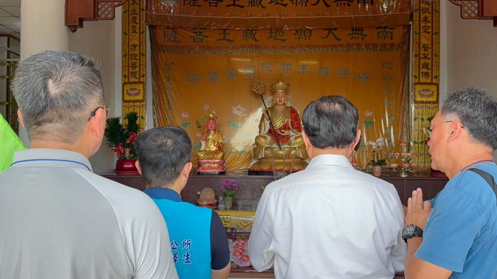

馬來西亞大同書院蒞臨吉安慈雲山 跨越國界為花蓮祈福

可樂電子報小編/編輯
來自馬來西亞的大同書院一行三十六位師生，日前參訪吉安鄉慈雲山懷恩園區，透過文化交流、追思誦念及祈福儀式，向〇四〇三花蓮地震受災民眾及歷次天災、人禍中的罹難者表達追思與關懷，並共同祈願社會平安、人民安康、世界和平，展現跨國文化交流與人文關懷的深厚情誼。

適逢慈雲山中元祈福護靈普渡法會前夕及園區納骨堂修繕工程啟動前，大同書院院長許源泰率領師生在慈雲山持誦「佛頂尊勝陀羅尼」靜心祈福，藉由傳統文化儀式追思先人、撫慰人心，也為花蓮災後重建及地方安定獻上祝福。活動中並為歷年天災、人禍及各類意外事故罹難者祈福追思，期盼藉由共同祝禱撫慰生者、緬懷逝者，傳遞尊重生命、珍惜和平與關懷社會的人文精神，並祈願世界減少災難、增進祥和。

許源泰表示，大同書院已由第三代華人傳承經營，以弘揚中華傳統文化、孝親敬老及文化交流為宗旨，長期與臺灣、中國大陸、緬甸等東南亞國家與當地致力弘揚中華文化的團體進行交流。此次到訪花蓮，主要感念花蓮近年歷經風災與地震等天然災害，期待透過此次祈福活動表達關心與慰問之意，希望透過誦經，在所遵行的中華傳統儒、釋、道文化裡佛教誦經儀式中祈福、消災，並持續深化各地文化交流，促進彼此理解與學習。

鄉長游淑貞表示，臺灣是個有多元信仰的地方，不論佛教、道教、一貫道、基督教及天主教等，皆相互尊重，也展現宗教共融的精神。此次大同書院專程來到慈雲山懷恩園區，不僅為地方祈福，更以跨越國界的善念，為吉安鄉、北區五鄉鎮及花蓮縣祈求平安與和諧。她也感謝大同書院遠道而來，以實際行動傳遞關懷與祝福，期盼未來持續透過文化、教育及公益交流，凝聚更多善的力量，共同打造包容、和諧、安定的幸福家園。

▶ 延伸觀看
📺 相關報導影片：點此於 YouTube 觀看完整報導